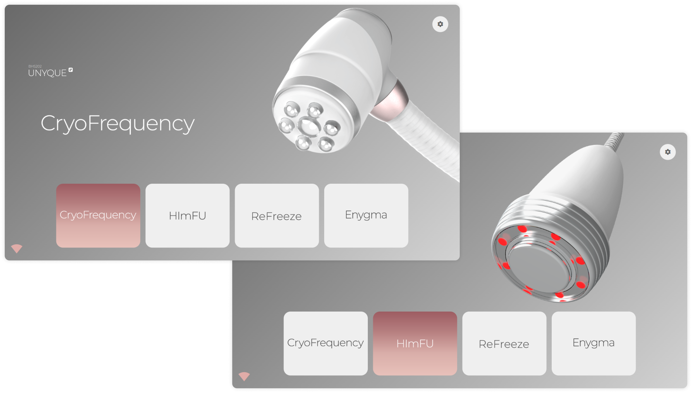
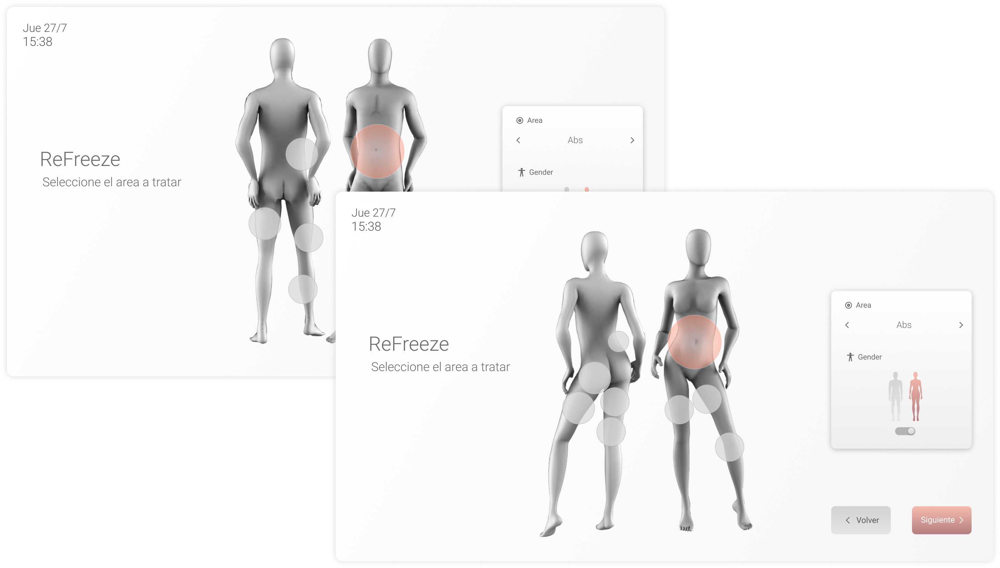
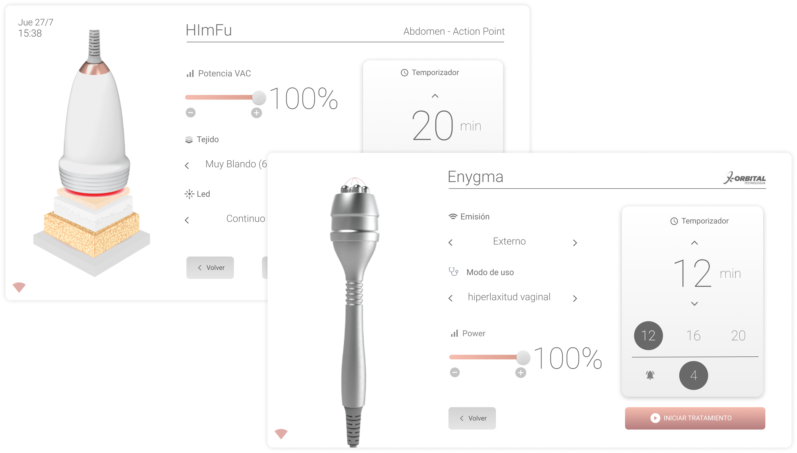
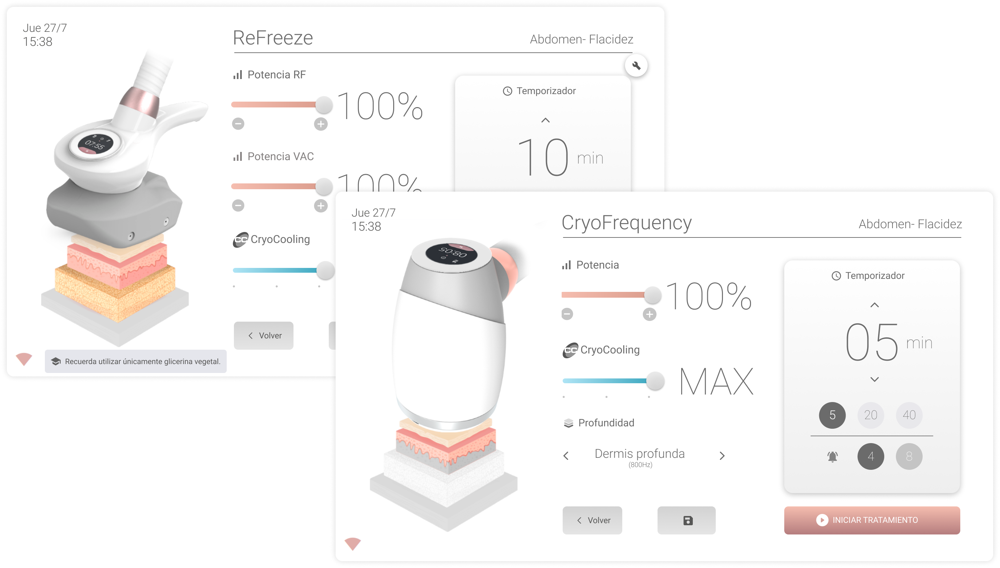

entrevistas de investigación
BODY HEALTH · NEW BHS202 · 2019 — 2024
Un solo sistema operativo para toda una línea de equipos estéticos
Cuatro terapias, dos tamaños de pantalla y usuarias que aprendían el equipo leyendo el manual. El rediseño integral de hardware y software que unificó toda la línea, reconocido con el Sello de Buen Diseño de Argentina.
Rol
Product Designer Sr.
Empresa
Body Health
Herramientas
Figma · Illustrator
pantallas diseñadas
tamaños de pantalla (12" 16:10 y 14" 16:9)
tests de usabilidad
Overview
Body Health fabrica equipos de estética profesional. Para su nueva línea el objetivo no era maquillar la pantalla existente: había que repensar el gabinete, los aplicadores y el sistema operativo como un mismo producto, capaz de sostener cuatro terapias distintas —CryoFrequency, HImFU, Enygma y ReFreeze— sin que cada una se comportara como un aparato diferente.
Entré como Product Designer Sr. a cargo de la investigación y de las decisiones de producto: qué variables debía controlar el usuario, cómo se aprendía el equipo sin manual, qué tenía que ser preestablecido y qué manual, y cómo un mismo sistema podía servir a una médica esteticista y a una cosmetóloga que alquila el equipo por temporada. La UI fue la consecuencia de esas definiciones, no el punto de partida.
Empatizar
Arranqué por escuchar a quienes ya usaban el equipo. Primero una encuesta a clientes actuales para entender qué valoraban y qué cambiarían, y después entrevistas en profundidad con usuarias y potenciales compradoras. Lo que apareció no fue un problema estético: era un problema de comprensión.
no podía diferenciar niveles de importancia en la información en pantalla
no encontraba la información donde la esperaba
quería controlar más variables durante la terapia, incluida la zona del cuerpo
recurría habitualmente al manual de usuario
Las preferencias de interfaz terminaron de ordenar el rumbo: un 70% pedía más color en pantalla, y sobre el tamaño ideal el 62% eligió 14" frente a un 26% que prefería 10" y un 12% que quería 20". Sobre qué controlar durante la sesión, el 48% quería potencia, tiempo y zona del cuerpo; el 42% tiempo y sesión; y solo un 10% se conformaba con el tiempo. Y en configuración de tratamientos apareció la tensión central del proyecto: el 50% pedía modos preestablecidos por terapia, el 38% quería controlar tantas variables como fuera posible y apenas un 12% estaba conforme con el sistema actual.
Definir
Con el material en la mesa agrupé los hallazgos en pain points concretos y los volví criterios de decisión para el resto del proyecto.
Lenguaje demasiado técnico
Sin soporte dentro del sistema
Interfaz poco intuitiva
Jerarquía de información confusa
Sin patrones estándar, difícil de aprender
Poca adaptabilidad entre tipos de usuario
Pérdida de tiempo al programar el equipo
Sin pantallas de servicio técnico
De ahí salieron dos user personas que usé como filtro en cada definición posterior.
Dra. Carolina Ruiz
39 años · CABA · médica esteticista con clínica propia
QUIERE
Delegar el uso del equipo en personal no médico, ofrecer tratamientos personalizados y llevar registro de las tareas de su clínica.
LE FRUSTRA
No poder explicar el equipo fácilmente, no poder guardar programas y la falta de actualizaciones.
Gladis Rito
45 años · Junín · cosmetóloga, alquila el equipo
QUIERE
Terapias consistentes entre sí, tratamientos rápidos y equipos intuitivos que pueda usar desde el primer día.
LE FRUSTRA
Perder tiempo leyendo manuales y no contar con programas inteligentes ni asistencia dentro del equipo.
Con eso definí los objetivos de producto: simplificar el lenguaje técnico y permitir consultar el manual desde el propio dispositivo, reducir el tiempo de configuración, construir un sistema que sirva tanto al operador experto —con control manual— como al nuevo, con modos preestablecidos, sumar conectividad a internet para actualizaciones remotas y dejar una interfaz escalable a toda la línea, con lugar para tratamientos futuros.
Idear
Antes de dibujar pantallas puse el foco en entender qué esperaban las usuarias que el equipo hiciera. La mayoría venía de trabajar con la línea anterior: ya tenían un modelo mental armado, gestos incorporados y una manera de nombrar las cosas. Romper eso por completo las hubiera obligado a reaprender el equipo; sostenerlo tal cual hubiera arrastrado los mismos problemas.
La dirección fue conservar lo que ya sabían y resolver, uno por uno, los pain points detectados: lenguaje más simple, jerarquía clara, patrones reconocibles y soporte dentro del sistema. En paralelo trabajé el moodboard para definir qué queríamos que el equipo transmitiera: cercanía, precisión y tecnología amable, más cerca de un objeto de consumo —parlantes, termostatos, wearables— que de un aparato médico. Esa intención guió después la paleta, los materiales y el tratamiento de la interfaz.
Moodboard: la percepción buscada para el equipo —cálido, preciso y familiar.
Prototipar
Los primeros sketches los trabajé en papel junto al equipo médico y a clientes, para mapear el flujo completo antes de invertir tiempo en pantallas. Esa instancia definió el recorrido que después sostuvo todo el sistema.
01
Seleccionar la terapia —HImFU, Enygma, CryoFrequency o ReFreeze— desde la pantalla principal
02
Elegir zona y tipo de cuerpo con diagramas corporales frontal/posterior, masculino/femenino
03
Configurar las variables del tratamiento: potencia, temperatura y profundidad
04
Iniciar la sesión con el temporizador activo y los controles a mano

Del sketch en papel al flujo: terapia → zona del cuerpo → variables → sesión.
Grillas para dos pantallas
Con el flujo definido bajé la estructura a los dos formatos que había que resolver en simultáneo: el equipo principal, con tablet de 14" en 16:9, y el equipo "hijo", con tablet de 12" en 16:10. Adapté la grilla entre ambos para que los componentes fueran exactamente los mismos y solo cambiara la respiración —nunca la jerarquía ni el recorrido. Esa decisión es la que después permitió que toda la línea compartiera un mismo sistema operativo.
Seis columnas en ambos formatos: 375 px de columna y 40 px de gutter en 1920×1080, 158 px y 25 px en 1280×800.
El design system
Armé el sistema de componentes que sostiene las cuatro terapias: estados de iniciar y detener tratamiento, controles de sesión —temporizador, profundidad, potencia y temperatura—, diagramas corporales, tipografía, escala y las animaciones de cada interacción. Todo pensado para que sumar una terapia nueva sea ensamblar piezas existentes y no rediseñar pantallas.
Componentes, estados y controles de sesión.
Testear
Validé el sistema con 20 tests de usabilidad sobre las 32 pantallas diseñadas, en los dos tamaños de pantalla. El foco estuvo en las tareas que la investigación había marcado como críticas: configurar un tratamiento sin abrir el manual, entender la jerarquía de la pantalla de sesión y moverse entre modo preestablecido y control manual sin perder el hilo.
Resultado
La línea Unyque quedó con un sistema operativo único y consistente: las cuatro terapias comparten estructura, componentes y vocabulario, y el equipo puede sumar tratamientos futuros sin rediseñar desde cero. La misma interfaz funciona en 12" y en 14", y convive el uso experto con el modo preestablecido que pedía la mitad de las clientas.
El proyecto —gabinetes, aplicadores e interfaz— recibió el Sello de Buen Diseño de Argentina.

Pantalla principal: las cuatro terapias en un mismo punto de entrada.

Diagramas corporales: zona y tipo de cuerpo, frontal y posterior.

HImFU y Enygma: cada terapia ensambla los mismos componentes con sus propias variables.

ReFreeze y CryoFrequency: las mismas variables, la misma jerarquía, en los dos formatos de pantalla.
Aprendizajes
El dato más incómodo de la investigación fue el más útil: la mitad de las clientas quería modos preestablecidos y casi cuatro de cada diez querían controlar todo. Resolver eso como una decisión de producto —dos modos conviviendo en un mismo flujo— en lugar de promediar preferencias fue lo que hizo escalable al sistema.
También confirmé que en hardware el diseño no termina en la pantalla: trabajar el software junto con el gabinete y los aplicadores, y sentarme con el equipo médico desde el sketch en papel, evitó decisiones de interfaz que después no hubieran tenido dónde apoyarse físicamente.